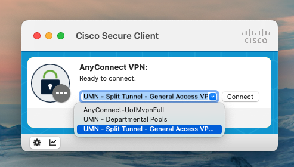
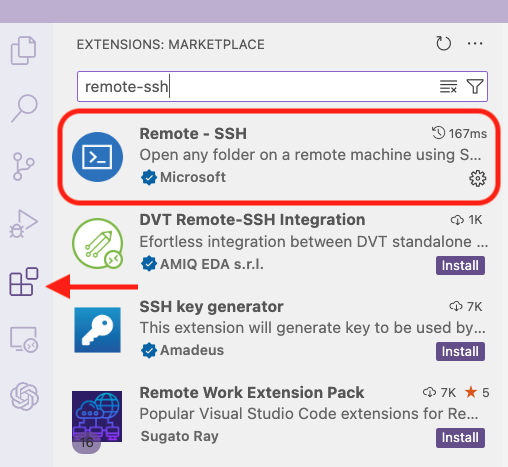
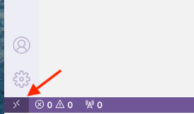
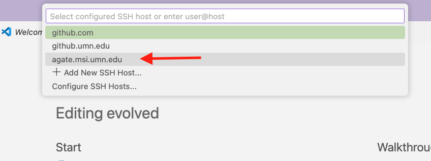
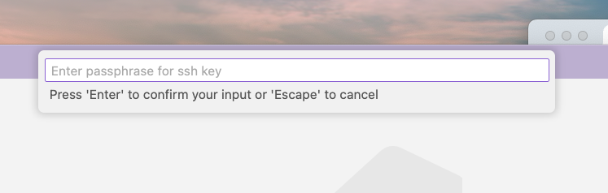
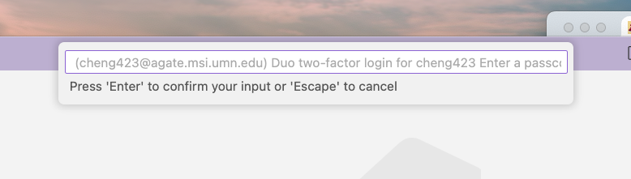
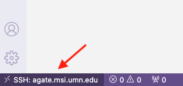
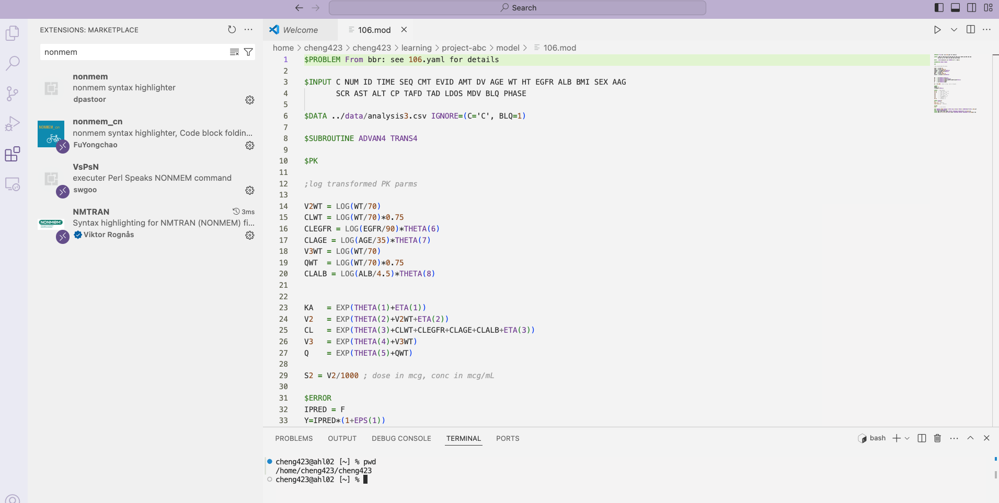

Visual Studio Code (VScode) is a useful source code editor to interact with Minnesota Supercomputing Institute (MSI). This blog illustrate you how to connect VScode with MSI through Remote-SSH.
1. Set up SSH key for the remote communication with MSI
Follow the tutorial specified by MSI to setup SSH key in your local computer.
2. Create ~/.ssh/config in the local machine
Run this in terminal,
```{bash}
cd ~/.ssh
ls
```If you can see file config in the output, then it means config has already been created in your local machine.
If you cannot see config in the output, run this in terminal,
```{bash}
touch ~/.ssh/config
```3. Add MSI front-end server as a new SSH host
Open config, copy and paste the following scripts. Replace your.msi.username with your X500 and save it.
```{bash}
Host agate.msi.umn.edu
HostName agate.msi.umn.edu
User your.msi.username
IdentityFile ~/.ssh/id_rsa
```4. Connect to VPN
MSI can only be accessed when
You are connected to eduroam network on campus.
You are off campus but connecting to the University’s Virtual Private Network (VPN). Please make sure when selecting a channel for connection, do NOT select the channel named “UMN - Departmental Pools”.

5. Connect VScode with MSI
- Under tab “Extension”, install extension “remote-ssh”

- Once installed, you will be able to see this icon on the very bottom left corner of your VScode window.

- Click the icon, select “connect current window to host”. You should be able to see the
agate.msi.umn.eduif MSI SSH was correctly added to the~/.ssh/configfile. Selectagate.msi.umn.eduand wait for a few seconds.

- Entering your passphrase (set up in the SSH key in Step 1)

- Going through the two-factor authentication as instructed.

- Once connection is established, you will be able to see the ssh connection icon on the very bottom left corner of your VScode window shows your MSI hostname.

- You can now use VScode to navigate through the working directories on MSI, and use the MSI terminal. Installing relevant extensions in VScode can also make your work more efficient. For example, installing
nonmemsyntax highlighter through VScode can more efficiently visualize aNONMEMscript.
